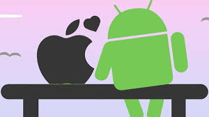

Curiosidades de Tecnologia
História do mascote do android
Provavelmente você sabe que o sistema operacional Android, mantido pelo Google é um dos mais utilizados para dispositivos móveis em todo mundo Mas talvez você não sabia que o seu simpático mascote tem um nome e história muito curiosa? Pois acompanhe esse artigo para aprender muita coisa sobre esse robozinho
A primeira versão
A primeira tentativa de criar um mascote surgiu em 2007 e veio de um desenvolvedor chamado Dan Morrill Ele conta que abriu o inkscape (software livre para vetorização de imagens) e criou sua própria de robô. O objetivo era apenas personificar o sistema apenas para a sua equipe. Não existia nenhuma solicitação da empresa para criação de um mascote

Essa primeira versão bizarra até foi batizada em homenagem ao seu criador, seriam os Dandroids
Surge um novo mascote
A idéia de ter um mascote foi amadurecendo e a missão foi passada para uma profissional da área. A ilustradora Russa Xurupita
também funcionária do Google, ficou com a missão de representar o pequeno robô de uma maneira mais agradável.

A principal inspiração para os traços do novo Bugdroid veio daqueles bonequinhos que ilustram portas de banheiro para indicar o gênero de cada porta. Conta a lenda que a artista estava criando em sua mesa de escritório do Google e olhou para o lado dos banheiros e a identificação foi imediata simples, limpo, objetivo
QUER SABER MAIS?
Outro assunto curioso em relação ao Android é que cada versão sempre foi nomeada em homenagem a um doce, em ordem alfabética apartir da versão 1.5 até a 9.0
- 1.5 - Cupcake
- 1.6 - Donut
- 3.0 - Eclair
- 2.2 - Froyo
- 2.3 - fihsufhsfs
- 3.0 - jdasjdh
- 4.0 - Ice Cream Sanduwich
- 2.3 - fihsufhsfs
- 2.3 - fihsufhsfs
- 2.3 - fihsufhsfs
- 2.3 - fihsufhsfs
- 2.3 - fihsufhsfs
- 2.3 - fihsufhsfs
Infelizmente o Android Q não existiu, pois o Google resolveu pôr fim a essa divertida prática e começou a usar numerações, o que deu origem ao Android 10.
Acesse aqui o site Android History para conhecer a sequência das versões "adocicadas" e o que cada uma trouxe para o sistema Android.
Entao é isso! Espero que você tenha gostado do nosso artigo com essa curiosidade sobre o sistema Android e seu simpático mascote